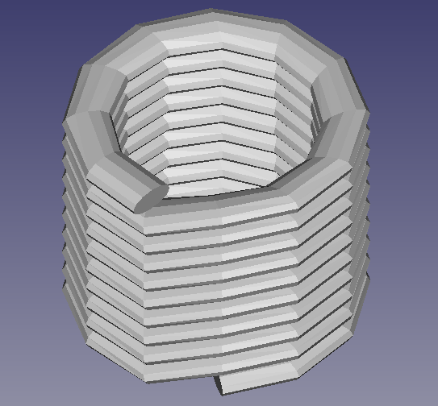
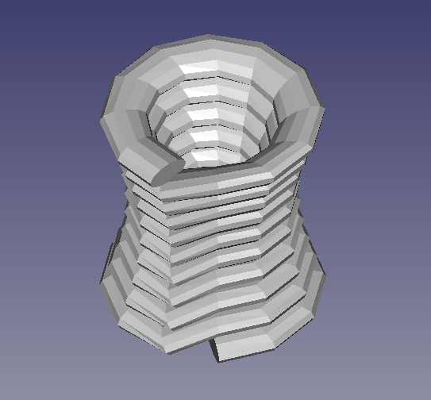
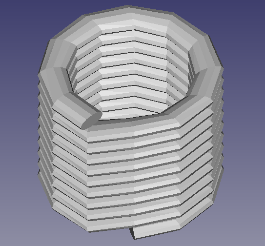
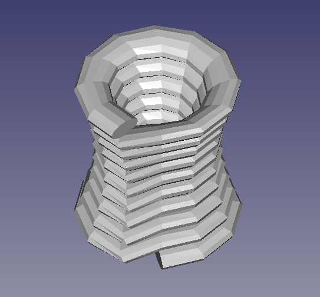

3D Printing Path Generation
 



3D Printing Simulation: Path Generation and Mesh Export/Visualization
This Python-based toolset simulates 3D path generation and mesh construction for 3D printed structures, such as concrete printing. It allows users to create complex paths, extrude 2D profiles along these paths using Rotation Minimizing Frames (RMF), and visualize the results as static renders or animated GIFs. The tool also supports mesh export for further analysis and real-world applications.
Core Features:
- Path Generation:
Generate diverse 3D paths suitable for additive manufacturing:
- Cylindrical Path: Sequential circular layers forming a vertical cylinder.
- Hollow Cube: Square perimeter paths stacked to create a hollow cubic structure.
- Convex/Concave Curves: Paths with smooth outward or inward curvature.
- Straight Wall with Smooth Arc Transitions: A zig-zagging wall with gentle curved transitions between layers.
- Profile Generation: Create 2D profiles (e.g., rectangles, circles, ellipses) that can be extruded along the generated paths to build complex 3D geometries.
- Rotation Minimizing Frames (RMF): Calculate RMFs along 3D paths to ensure smooth, twist-free extrusion of profiles, resulting in clean and accurate mesh generation.
- Mesh Editing & Export:
- OBJ Export: Save the generated 3D mesh in
.objformat for further processing or integration into other tools. - Mesh Refinement: Apply techniques like Laplacian smoothing and vertex welding to enhance mesh quality.
- OBJ Export: Save the generated 3D mesh in
- Visualization:
- Render static plots of the generated paths and extruded meshes.
- Create animated GIFs showing the progressive layer-by-layer construction of the 3D printed object.